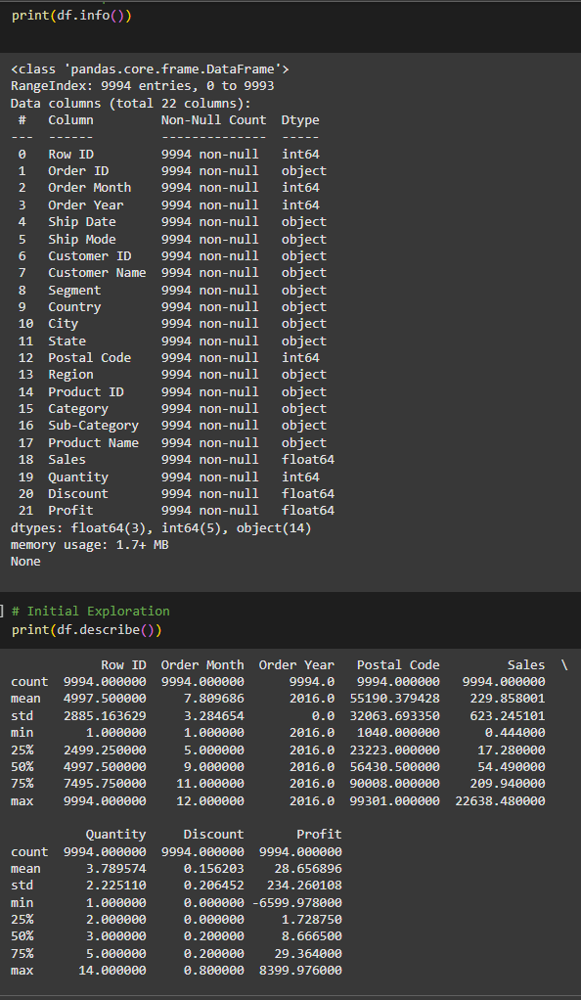
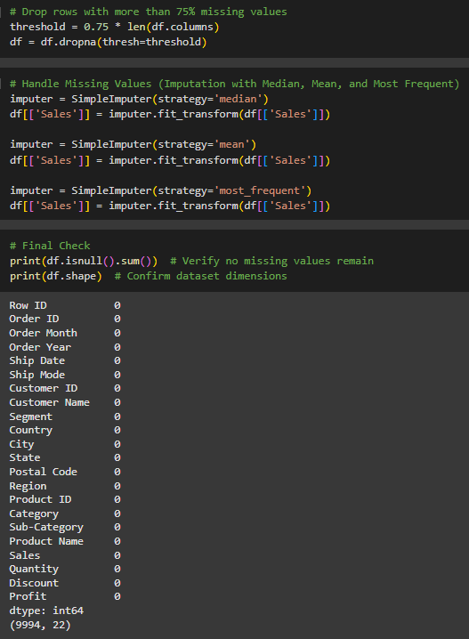

Overview
This project moved the Superstore analysis from manual spreadsheet work into a code-based workflow using pandas, numpy, and scikit-learn utilities. The emphasis was on data quality checks, profiling, and descriptive analysis that could be repeated more reliably than in Excel alone.
Python pandas numpy SimpleImputer
Approach
- Loaded the dataset with
pd.read_csv()and inspected structure withhead(),tail(), andinfo(). - Checked dimensions, data types, and memory usage.
- Used
isnull().sum()anddrop_duplicates()as quality checks. - Tested imputation strategies with SimpleImputer, even though the documented dataset state showed no null values.
- Calculated descriptive statistics and grouped results by category.
Key Findings
- The dataset contained 9,994 rows and 22 columns, all non-null, with a reported size of 1.7 MB.
- Sales ranged from 0.44 to 22,638.48, indicating a wide spread in transaction values.
- The reported sales standard deviation was 623.25 and variance was 38,434.45, confirming high variability.
- The workflow showed a clear shift from one-off spreadsheet analysis to a more repeatable code-based process.


Metrics
9,994Rows profiled
22Columns inspected
1.7 MBReported dataset size
22,638.48Maximum sales value
Business Value
The main value here is workflow maturity rather than a specific chart. This project shows the ability to profile a dataset systematically, document data quality assumptions, and prepare analysis in a form that can be rerun and extended.